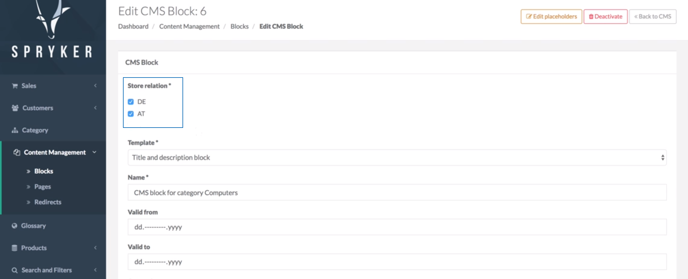
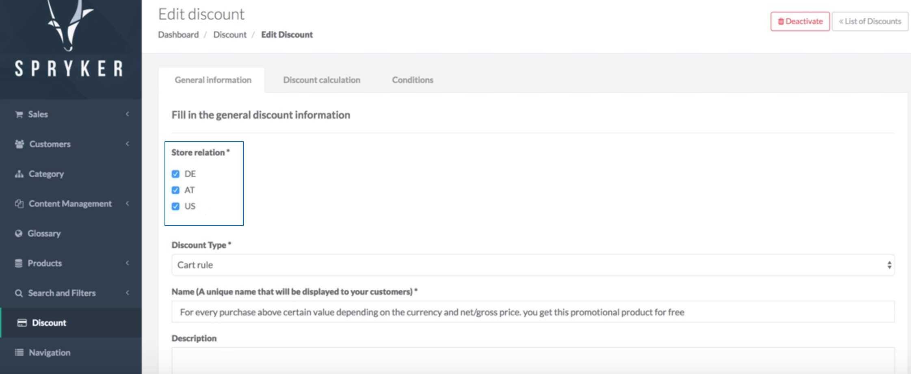
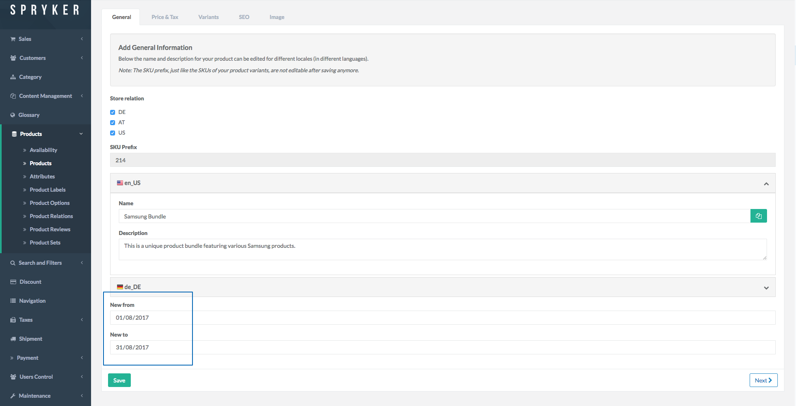

Release Notes - February - 2 2018
- Release Notes - February - 2 2018
Features
CMS Blocks Per Store
We continue progressing towards full enablement of the multi-store concept. With this release we are introducing a new multi-store CMS blocks feature. It enables you to manage CMS blocks display per stores through a store toggle element on CMS Block management pages in the Administration Interface. To define which store(s) a CMS block should be visible in, just select the respective store(s) under "Store relation".

Affected Modules
Documentation
For module documentation see:
For detailed migration guides see:
For store administration guide see:
Migration Guides
To upgrade, follow the steps described below:
- Apply every minor and patch:
composer update "spryker/*"- Once that is done, upgrade to the new module major and its dependencies:
composer require spryker/cms-block:"^2.0.0" spryker/cms-block-collector:"^2.0.0" spryker/cms-block-gui:"^2.0.0"Discounts Per Store
As part of the multi-store concept, Discount per Store feature has been implemented in this release. It allows to manage discounts per stores, which enables the shop owner to deliver an even better shopping experience for customers by creating targeted offers with discounts for specific countries.

Affected Modules
Documentation
For detailed migration guides see:
Migration Guides
To upgrade, follow the steps described below:
- Apply every minor and patch:
composer update "spryker/*"- Once that is done, upgrade to the new module major and its dependencies:
composer require spryker/discount:"^6.0.0"Time To Live For Products
With this release we are introducing a new feature that enables the shop administrator to set validity dates for products. With the Time To Live (TTL) For Products feature you can easily define from and till when your product(s) will be visible and available for purchase by your customers, without having to manage the inventory manually. This feature is extremely useful if you sell products with expiry date, seasonal products or products that are valid for a certain period of time (e.g. tickets), or if for promotional reasons, you temporally sell some products within a limited time frame, or if you want to start selling some products (e.g. a collection) from a specific date and/or time . The product validity time can be set to up-to-the minute accuracy.

Affected Modules
| Major | Minor | Patch |
|---|---|---|
| - ProductValidity 1.0.0 | - ProductManagement 0.11.0 | - ProductLabelGui 2.0.5 |
Migration Guides
To upgrade, follow the steps described below:
- Apply every minor and patch:
composer update "spryker/*"- Once that is done, upgrade to the new module major and its dependencies:
composer require spryker/product-management:"^0.11.0" spryker/product-validity:"^1.0.0"Improvements
Configurable Cookie Path
Previously it was not possible to configure the cookie_path for the session cookie. From now on you will have more flexibility in deciding how to set-up your store, as we have added a configuration option to define the cookie path for Yves and Zed so it can be configured according to the project's needs.
Affected Modules
| Major | Minor | Patch |
|---|---|---|
| n/a | n/a | - Session 3.2.4 |
Full Compatibility To Symfony 2.8 And Then 3.0
We continue making Spryker components compatible with new versions of Symfony. With Symfony Form v4 it is mandatory to check if a form was submitted before isValid() is called. In preparation for updating of all the components to v4, we have added such check to all controllers.
Affected Modules
Compatibility To PHP 7.2
With this release we have made Spryker OS compatible with PHP 7.2.
Affected Modules
| Major | Minor | Patch |
|---|---|---|
| n/a | n/a | - Customer 7.4.2 - Money 2.4.2 - ProductManagement 0.11.1 - PropelOrm 1.5.1 - Store 1.3.1 - Testify 3.4.3 - UtilSanitize 2.1.2 |
Bugfixes
User Role Saving Without Changes
Previously, when trying to save a user role without making any changes to it in the Administration Interface, an error message displayed. This has been fixed now - when saving a user role without changing it, nothing happens.
Affected Modules
| Major | Minor | Patch |
|---|---|---|
| n/a | n/a | - Acl 3.0.7 |
Error Message For Empty Mandatory Fields For CMS Page
Previously we had the following issue: when trying to save a CMS page with empty mandatory fields for example, for DE translations (collapsed by default) in the Administration Interface, nothing happened - no error was shown. This issue has been fixed in this release - if mandatory fields, which are collapsed by default, are not filled, they are expanded and highlighted.
Affected Modules
| Major | Minor | Patch |
|---|---|---|
| n/a | n/a | - CmsGui 4.3.7 |
Mail Text Layout Fix
Previously there was an issue with mail text layout - when sending an email in plain text, unnecessary spaces broke the layout. This has now been fixed - the spaces that caused the issue have been removed from the text layout.
Affected Modules
| Major | Minor | Patch |
|---|---|---|
| n/a | n/a | - Mail 4.0.2 |
PropelOrm Issue With DateTimes
Earlier we had an issue when saving users in the Administration Interface without making any changes: unchanged entities were still marked as modified. This was caused by the fact that all entities used different time formatting for DateTimes. When toArray() of an entity was used, DateTime was formatted with ->format('c') but the setter always used ->format('Y-m-d H:i:s.u'). This lead to always changed entities. This issue is fixed now.
Please make sure you are not using any project implementation that relies on the count of changed rows in such a scenario.
Affected Modules
| Major | Minor | Patch |
|---|---|---|
| n/a | n/a | - PropelOrm 1.5.2 |
Filters And Category Tree On Yves
Previously we had an issue with filters and category tree display on Yves: when category was accessed from the top navigation, the categories and filters section was not displayed. This issue has now been fixed.
Affected Modules
| Major | Minor | Patch |
|---|---|---|
| n/a | n/a | - ProductCategoryFilter 1.2.1 |
Editing Customer Details
Earlier there was an issue with saving customer details twice: after editing a customer, saving the data and then trying to edit and save the same customer again without making any changes, an error occurred. This issue has been fixed in this release.
Affected Modules
| Major | Minor | Patch |
|---|---|---|
| n/a | n/a | - Customer 7.5.1 |
Adding a New Filter To a Category
Previously we had an issue when trying to add an existing attribute key to a category filter - the filter was not added. This is fixed now.
Affected Modules
| Major | Minor | Patch |
|---|---|---|
| n/a | n/a | - ProductCategoryFilterGui 1.1.3 |
Clickable Name For a Deleted Customer Account
There was an issue with customer name of a deleted account: it used to be clickable on order details page. This has now been fixed: if customer account has been deleted, the customer name is not clickable.
Affected Modules
| Major | Minor | Patch |
|---|---|---|
| n/a | n/a | - Sales 8.5.2 |
Discount For Promotional Products
Previously we had the following issue: when adding a promotional products with several variants to cart and applying a discount, the discount was lost if variant of the promotional product was changed. This has been fixed: after changing variants of the promotional products, the discount is preserved.
Affected Modules
| Major | Minor | Patch |
|---|---|---|
| n/a | n/a | - DiscountPromotion 1.0.7 |
Documentation Updates
The following content has been added to the Academy:
Your feedback would be highly appreciated. Please help us understand what you need from the Spryker Academy by filling out a very short survey here.